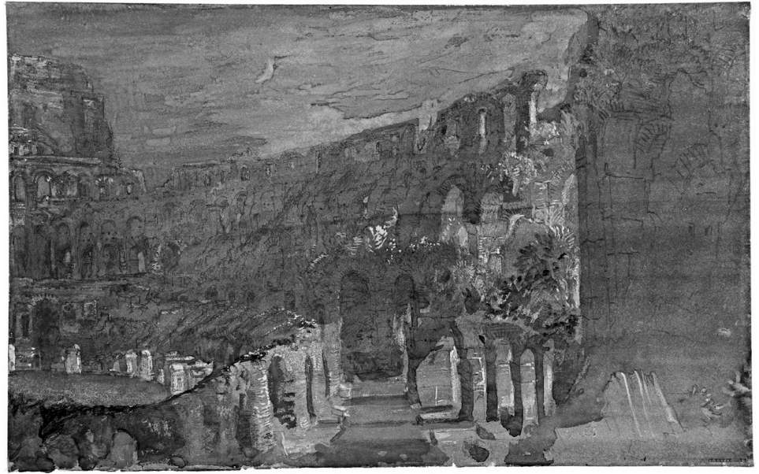
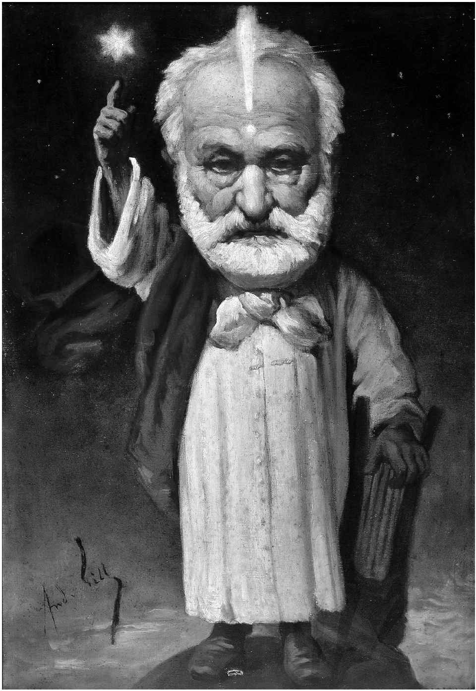

至少自19世纪20年代以降，浪漫主义的定义已在学术界和新闻界经历了广受关注、热度突降、小修小补、重见天日、遭人模仿、被人遗弃、东山再起，最终尘埃落定，又从死亡边缘涅槃重生的无限循环。才智过人的历史学家A.O.洛夫乔伊在1924年的经典之作《论诸种浪漫主义的区别》一文中声称“浪漫主义”（Romanticism）一词意义如此驳杂，以致其自身已失去意义。他迫切要求我们放弃这一词语，或者起码像他的文章标题那样，使用这一词语的复数形式。他对三个早已习惯于使用“浪漫主义”这一术语的文学流派或文学运动进行了研究，一个英国的，一个德国的，一个法国的，却发现这三者没有任何共同特征。虽然洛夫乔伊非常具有影响力，但是相较于追随者来说，他却招来了更多的驳复。“浪漫主义”一词不仅一如既往地存在于中小学和大学的课程名称和教科书的书名中，也顽强地扎根在日常对话中。还没能摆脱它——这是洛夫乔伊自己也含蓄承认的事实，因为将一个物质名词变为可数名词，将“浪漫主义”变为“诸种浪漫主义”，就是要从后门承认他已从前门挥手赶走了的东西。现在，我们来细数有多少种浪漫主义，但是我们又如何知道什么才算是浪漫主义呢？很多人认为，也许我们最好学着接受这一词语，接受它的单数形式。
1824年，恰好在洛夫乔伊发表《论诸种浪漫主义的区别》一个世纪前，埃米尔·德尚已被巴黎期刊界和咖啡馆的温室世界里那喧闹而又永无止境的争论弄得疲惫不堪。他在《法兰西缪斯》中写道：“人们频繁地给浪漫主义下定义，一切已然变得相当混乱，不需要我作任何新的尝试再将这一局面越搅越乱。”1836年，阿尔弗雷德·德·缪塞，一个现今几乎无人会质疑其浪漫主义者身份的人，在《杜比和科托奈通信录》中（正如洛夫乔伊指出的）对法国过去十年许多种相互矛盾的使用该术语的情况作了令人愉悦的调查。近来，“浪漫主义”一词的研究取得巨大进展，尤其是将其与“古典主义”（classicism）作了对比解读。缪塞的主人公杜比和科托奈受到启发，开始去探本溯源，去阅读他们所能找到的一切材料。“起初大概有两年的时间，我们认为，就写作而言，浪漫主义只适用于戏剧，认为浪漫剧和古典剧的区别在于它摒弃了三一律。”三一律指的是要在一天、一地完成一事，几乎所有的古代和新古典主义戏剧均遵循这一原则。很快，他们就被纠正了。“不料，突然有人告诉我们（我想是在1828年），诗歌有浪漫主义和古典主义之分、小说有浪漫主义和古典主义之别、颂歌也有浪漫主义和古典主义之异。”此后，他们就枕席难安了。然后，他们阅读了一名权威作家写的序言。“序言非常明确地指出，浪漫主义无非是荒唐和严肃、怪诞和恐怖、滑稽和可憎的结合体。若您愿意换一种说法，那就是喜剧和悲剧的结合体。”他们对这种说法很是满意，这之后，便能安然入睡了。然后，科托奈带来一些阿里斯托芬的戏剧，他们就得出结论，认为这个将任何事情都能写进剧本的古希腊喜剧作家一定是个浪漫主义者！这之后，他们对“浪漫主义”这一词语本身产生了兴趣，觉得它十分优美。“它很像‘罗马’（Rome）、‘罗马人’（Roman）、‘罗曼史’（Romance）和‘罗马风格’（Romanesque）等词，也许它和‘罗马风格’一词的含义一样”——但事实证明这也是无稽之谈。当他们得知斯塔尔夫人在《论德国》一书中将浪漫主义介绍到法国之时，其中一人宣称道：“我想这就是我们所要寻找的。浪漫主义就是德国诗歌。”但之后，随着阅读的深入，他们发现应该将英国诗歌包括进来，也应该将西班牙诗歌包含到浪漫主义中来。很快，他们又迷失方向。他们设法找到另外几个定义。直到1832年，他们才认为浪漫主义一定是一种哲学体系或政治经济学体系。之后，“从1833年到1834年，我们以为浪漫主义就是不刮胡子，穿着大翻领、浆得很板的背心，不修边幅”。然后，一个学者告诉他们，
这些“胡言乱语”让他们更加困惑，经过进一步研究后，他们得出结论：浪漫主义就是“滥用一堆形容词”。
要简短介绍法国浪漫主义，我们不如跟随以下这一令人悲喜交加的研究去寻求答案。举例来说，那篇“由某位权威作家撰写的序言”反复论及怪诞滑稽与崇高优美的对照原则，那就是浪漫主义核心人物维克多·雨果为剧本《克伦威尔》（1827）所作的序言，如果当时浪漫主义有核心人物的话。然而，我们可能没有发现在这一长串定义中，除去该学者的诗意表述外，所有的定义均为简短的公式化介绍，均只指出了所有浪漫主义相关表述的共同之处。这就是洛夫乔伊所公开指责的该公式的缺失所在。但是，没有法律规定定义必须指出共同之处，或者必须像一个短语或句子那样简明扼要。这里有一种更为灵活的定义方式，或许能在这里对我们有所裨益。但是，这种方式可能会让那些像杜比和科托奈一样想要梳理各种概念的人们感到失望。在正式对浪漫主义下定义之前，我们将先探讨这两位研究者无意间涉足的一个问题，即英文中的“浪漫主义”一词与“罗马”“罗马人”“罗曼史”“罗马风格”一系列词语的相似之处。严格说来，这些词语并不能为我们提供浪漫主义的确切含义，但是研究这些词语之间的关系至少能让我们知晓为何最终是“浪漫主义”一词成为了这一文学潮流的名称。
追根溯源，“浪漫”一词源于拉丁语中的Roma，意为“罗马城”。这可算是词源学的一桩奇事，因为数世纪以来，古罗马人给人留下的普遍印象无疑是，他们是最不浪漫的民族。如今，意大利的旅游业很大一部分归功于罗马的“浪漫之都”城市形象。然而，纵观整个文化历史，具有绝妙讽刺意味的是，如今一些我们所谓的浪漫主义作家（和画家）独具特色的创作主题实际上不过是古罗马城的遗迹。这些主题思想在一些文学作品，如夏多布里昂的《勒内》（1802）、奥古斯特·威廉·冯·施莱格尔的《罗马：挽歌》（1805）、斯塔尔夫人的《柯丽娜》（1807）、拜伦的《恰尔德·哈罗德游记》第四章（1812）、拉马丁的《自由，或罗马一夜》（1822）当中均有所体现。
中世纪时，该词的词源学意义发生了奇特的转向。从形容词Romanus派生出第二个形容词Romanicus，而后，又派生出意为“以罗马人的方式”的副词Romanice，该副词未能在书面语中得到查证。罗马–高卢的拉丁语使用者会将romanice发成类似于romanish、romansh、romants或romaunts的发音。那时，法兰克人早已征服高卢地区并将其纳入法兰克王国，即“法国”，但他们却说着一种类似德语和荷兰语的日耳曼语，所以romants（有romauns、romaunz、romance等多种写法）一词就被用来区分罗马–高卢地区的罗马语或拉丁语与其征服者所使用的法兰克语或“法语”。当然，法兰克人最终放弃了其母语而改说罗马语（romauns）。至此，“法语”一词的词源从法兰克荷兰语转换成现在我们所说的“古法语”，一种由法国通用的拉丁语发展起来的语言。然而，romauns一词保留了下来，用于区分拉丁语口语或方言与宗教、法律中所使用的拉丁语。后者较前者更为古老，且几乎已被固定下来。（Romance一词仍然用来指称拉丁语的所有派生语言：法语、意大利语、西班牙语、葡萄牙语、罗马尼亚语及其他语言。）

图1 J.M.W.透纳，《月光下的罗马竞技场》（1819）。浪漫主义作家和画家喜欢的主题之一是罗马废墟或任何古代建筑的废墟，特别是月光下的废墟
Romauns一词也被用于指称以高卢–罗马语（古法语）书写的任何作品，甚至在这种语言被改称为“法语”之后，仍用于指称用该种语言写就的特定类型的文学作品，即我们今日仍称的“传奇故事”，那些关于骑士、魔法、爱情的传说，尤其是亚瑟王及其圆桌骑士的传说。这些传奇故事是小说的前身，法语中的“小说”一词先是演变成romant，然后变成roman。德语、俄语和其他语言都借用了法语中的“小说”一词，英语则借用了意大利语novella，即“新（故事）”，并对“传奇故事”的范围进行了限定，起初用来指称原创的中世纪作品，之后指称取材相似的作品，如斯宾塞的《仙后》（1590—1596），最终指称一种特定类型的小说，如司各特的《艾凡赫》（1819）、霍桑的《福谷传奇》（1852），或是今日的“浪漫爱情小说”。传奇故事作为一种文学体裁，首先是在英国，而且尤其是在英国，再次被发现并大受褒奖，这确实成为浪漫主义兴起时期的标志之一。理查德·赫德的《关于骑士精神与传奇文学的书简》（1762）唤起了文学界对中世纪和文艺复兴时期文学的再次关注。不久，涌现出诸多效仿该作的诗歌作品，如拜伦的《恰尔德·哈罗德游记》前两章（1812）、摩尔的《拉拉·鲁克：一个东方人的浪漫史》（1817）及济慈的《恩底弥翁：一个诗人的罗曼史》（1818）。
法语中的romant或roman派生出romantesque和romanesque等多个形容词，后者现应用于建筑史，指称哥特式建筑风格之前的风格。到了17世纪，法语中出现romantique一词，英语中出现romantick一词。但是，直到18世纪中叶，这两个词语才得以流行起来，这主要缘于詹姆斯·汤姆森的诗歌《四季》（1726—1746）的巨大影响。该诗一经发表，几乎立即被译成各种主要欧洲语言；在诗歌中，我们能够发现以下表达：“浪漫的山峦”“浪漫的景色”，还有云朵“卷成浪漫的形状”。18世纪60年代，德国出现romantisch一词；法国则使用romantique一词，有时用来指称某些文学的某些类型，如小托马斯·沃顿在其《浪漫小说》（1774）一书中的用法。
18世纪90年代，施莱格尔两兄弟，即弗里德里希和奥古斯特，以及他们的圈内人开始撰写浪漫主义诗歌相关著作。他们注意到romauns作为专业术语的旧时用法不同于“拉丁语”中的用法，因为“浪漫主义”文学的一个最初意义就是作为“古典主义”文学，即希腊和拉丁文学的对照物出现的。施莱格尔兄弟中，弗里德里希更加精于理论研究，他通常不将“浪漫主义”作为一个时期的术语使用。他否认自己将“浪漫主义”与“现代”等同起来，因为他认识到一些同时代的作家属于古典风格；相反，“我在老一辈的近代作家中寻求和发现浪漫主义，”他写道，“在莎士比亚和塞万提斯的作品中，在意大利诗歌中，在那个骑士文学、爱情小说和寓言故事盛行的时代里；这个现象和这个词语本身就是从那个时代衍生出来的”（《诗歌漫谈》，1800）。然而，在他的圈子里，“浪漫主义”一词几乎等同于“现代”或者“基督教”，含义与“古代”相反；而有时，它的含义会缩小为“小说”，该词语与Roman相关，意为“新颖”或“新奇”，小说正在变成一种典型的现代文体。
于是，作为一个文学思潮术语，“浪漫主义”在一二十年之内，在整个欧洲得到广泛接受并且引发了热烈的争论。但是，值得铭记的是，虽然被后代贴上了“浪漫主义”这一永久去除不掉的标签，在英国，不论是那个同时代的“湖畔派”诗人（华兹华斯、柯勒律治、骚塞、兰姆）还是下一代的浪漫主义诗人（拜伦、雪莱、济慈、亨特）或是其他人，他们当时并不自称为浪漫主义者。整个欧洲大陆文学圈，甚至在施莱格尔圈子中情况也是如此：如果只将目光局限于那些自称为“浪漫主义者”的作家、画家和音乐家身上，我们将会一无所获。然而，我们要特别感谢斯塔尔夫人《论德国》（1813）一书，书中不仅记录了她与歌德及席勒的邂逅，也记录了她与浪漫主义学派的邂逅。自此，浪漫主义/古典主义之别成为欧洲人永久的议题。1810年，俄国已在使用romanticeskij一词；1814年，意大利已在使用romantico一词；
1818年，西班牙已在使用romantico一词。1815年，华兹华斯在其《诗集》序言中辨析了“古典七弦琴”和“浪漫竖琴”之间的区别，这两种乐器便成为对比鲜明的艺术风格的常见象征，我们在雨果的《七弦琴与竖琴》（1822）中也发现了同样的观点。

图2 安德烈·吉尔，《魔术师维克多·雨果》（1880）。晚年时，维克多·雨果成了先知和新宗教的创始人。吉尔的漫画中，雨果穿着传统祭司服装，一手拿着竖琴，一手指着一颗预示着自由的诗歌之星（正如他在诗歌《斯特拉》中所宣称的那样），额头上画有感叹号
这差不多就是我们如何理解“浪漫”这个词语的过程了。那么，问题又回来了：当我们用它来指称一个文学运动或流派，而不是一座山或一朵云时，它是否有，或者说我们是否能够赋予它一个令人满意的定义？当然，近两个世纪之后，我们已经对应该归入其中的人和观点有了一定的认识，但是他们如此多种多样，想要寻求一个单一的总体特征似乎是无望的。杜比、科托奈和洛夫乔伊们的努力已经向我们证实了这些。有些人认为如果我们沿用路德维希·维特根斯坦关于“家族相似性”的观点，对于“定义”本身采用不太严格的定义，我们就能更有建设性地接近这个问题。对此，我深表赞同。例如，在一个十人家族中，可能会反复出现五六个独特的面部特征或身体特征，但是可能其中两个甚至三个成员并没有这样的共同特征。他们可能每个人有两三个家族特征，但这两三个特征并不相同。家族的其他成员可能每个人都有四五个家族特征，那么就会存在很多重叠部分。当你已仔细观察比如这个家族的五个成员时，你就极有可能从人群中找到另外五个成员。基于该观点得到的定义将会是一个由不同特征组成的列表，这些特征按照重要性和普遍性排列，但是没有一个，甚至可能没有两个或三个特征是决定性的。
1949年，雷纳·韦勒克对洛夫乔伊提出的理论做出了极具影响力的回应。他提出，被我们称为浪漫主义者的那些作家具有相同的三个特质或“准则”，即就诗歌观来说是想象，就世界观来说是自然，就诗体风格来说是象征与神话。他承认，有些我们认为的浪漫主义作家并不具备其中的某种标准，如拜伦从不将想象力看成是最根本的创造力，而“布莱克则有些疏离”于自然（这无疑是个低调陈述，因为在布莱克看来，“自然”永远是“想象力”的障碍）。但是，这三个准则广泛存在于欧洲文学中，且通常这三者会相辅相成，不可分割。韦勒克和洛夫乔伊对于定义的概念有着相同的看法，但是在韦勒克看来，我们所要寻找的不是单独的一个特质，而是三个。（更确切地说，由于这三个特质互相联结，它们更像是一个特质，一个相当复杂的特质，因此有可能无法在每一位浪漫主义作家身上充分体现。）然而，韦勒克所援引的那些特例让他陷入窘迫，因为，如果拜伦不是浪漫主义作家，或者说他仅仅拥有浪漫主义作家三分之二的特质，我们就需要重新思考了。
但是，借助“家族相似性”概念体系，韦勒克的三大内涵特质的缺憾或许能够得到弥补。我们不妨以此作为开始，制作一份列表。哈罗德·布鲁姆曾宣称，浪漫主义是“追寻罗曼史的内在化”，是从中世纪传奇故事中的英勇追寻向内在精神之旅的一种转变。斯宾塞诗体曾用于创作充满冒险精神的长诗《仙后》，拜伦也用此种诗体创作了传奇故事。但是，这一传奇故事的主人公恰尔德·哈罗德并没有做出任何非常具有英雄气概的事，他的“朝圣”也没有目的地；他只是环游欧洲，深入思考自己所观察到的现象。在我们的列表中，布鲁姆所宣称的“追寻罗曼史的内在化”被排在韦勒克的三大内涵特质之后，主要是因为它囊括了romantic一词的词源学研究。该列表还应该包括M.H.艾布拉姆斯那本重要著作《自然的超自然主义》的绝妙书名（1971）（由托马斯·卡莱尔从德国学者那里引至英语世界）。该书引发了英国和德国的诗人和哲学家的一个信念，即神性无处不在，它存在于自然，存在于人的灵魂之中，而不存在于超然的神的心中。而“神性存在于神心中”这一理念已被T.E.休姆作为“跌落的宗教”而摈弃。类似于此的只言片语，再加上一些经常出现的主题、意象和场景，如罗马遗迹或风鸣琴等（见第二章），就能够给我们提供一系列有用、灵活的标记，使我们避免重新陷入徒劳的关于浪漫主义的本质或者共同点的讨论之中。
下面尝试在一个相当抽象的层面上用一段话来定义浪漫主义。这段话只有一句，但却包含多个从句。 [3]
或许，总有一天，该定义会成为浪漫主义定义初选名单中的一员，而浪漫主义定义的数量则像气球泄气一样不断缩减。这一定义无疑有改进空间，如通过添加这个或这些运动中反复出现的具体主题和形式，使得该定义更为厚重。但是，这个定义堪为第一近似值定义。 [4]
在对音乐和视觉艺术领域的浪漫主义下定义时，也出现了类似的难点；而且，因为这两个定义通常要设法与浪漫主义文学的不确定含义保持一致，情况就变得更为糟糕。稍后，我将在本书中对这两个领域作进一步的说明。但是，在这里，我要指出的是，如果我们想寻求一个涵括所有艺术形式的定义，它们看似会加大定义的难度；但是，如果我们将它们合在一起，它们或许就可以帮助我们发现浪漫主义文学中与其主题或象征完全不同的形式和风格的特点。毫无疑问，画家和作曲家也同作家一样风格多变，别具一格。但是，当他们被推上舞台和作家们同台竞技时，我们会发现一些家族特征，如与非抒情形式文学的“抒情化”相对应的不同领域艺术的“音乐化”、简短艺术形式的兴起，以及蓄意而作的片段的异军突起（见第六章）。就文学主题而言，很多都在其他艺术形式中得以展现，如在自画像中艺术家的自我奉献、在大师级的演出（帕格尼尼、李斯特、肖邦）、在“忏悔”音乐（例如，柏辽兹的《幻想交响曲》和《莱利奥》）中；或者在风景画呈现的荒芜自然里，在能够营造出室外环境氛围的音乐（尤其是在柏辽兹和李斯特的曲作）里，同样也在有关自然和漂泊的音乐的背景中。当然，除了艺术领域外，还有诸如哲学和政治理论、民俗采集和语言文化的历史研究，甚至科学领域等其他领域，均与浪漫主义互相影响，互为因果。
本书拟论及浪漫主义在西欧的孕育、诞生及成长三个时期，大约在1760—1860年这一时期的中段，浪漫主义方得其名。通常这一时期被称作“浪漫主义时期”或“浪漫主义时代”，尽管在各个国家、各个艺术领域内称呼有所不同。如果有人很显然要指出某一主要文化走向的某种特征，而并不一定断言其具有垄断地位，用“浪漫主义”“奥古斯都”“文艺复兴”“现代”或“后现代”这样的术语来表达某个时期也无可厚非。然而，人们很容易就不假思索地陷入文化同质的概念中，或者，至少认为任何事情都受到——用威廉·哈兹里特的话来说——“时代精神”，即Zeitgeist的影响。费尽心思去证明简·奥斯丁或是威廉·戈德温是浪漫主义者，往往显示了这种未经证实的猜想正在大行其道。任何一个时代都存在着各种各样的规范、趋势、品味或流派。某些时候，它们中的任何一个都不会成为时代主流。正如大多数学者都认同浪漫主义已成为主流，但是其成为主流的时间却难以确定。就英国而言，我们通常将浪漫主义的开端定在1789年。这一年，布莱克的诗集《天真之歌》出版，法国大革命也恰巧爆发。但是，正如韦勒克所言，布莱克直到去世后很久才受到世人关注，而且他也并不是一个完全的浪漫主义者。1798年似乎是另一个不错的起始日期。这一年，施莱格尔兄弟创立了耶拿派，而华兹华斯和柯勒律治的《抒情歌谣集》也恰好于这一年出版发行。但是，要再过几年时间，这部诗集才能确立其在浪漫主义史上的地位，而且并不畅销。或许直到1812年，拜伦意识到自己因《恰尔德·哈罗德游记》而成名时，我们才有充分理由宣称，浪漫主义已成为一种普遍的情结或规范，尽管拜伦若是听到这番话会感到非常震惊。英国浪漫主义的退场一般被认定发生在1832年，以《改革法案》的通过为标志。但是，人们感到济慈、雪莱和拜伦三个年轻的浪漫主义者（更不用说布莱克）的去世才真正结束了浪漫主义。但是，难道丁尼生（华兹华斯之后的另一位桂冠诗人）不是浪漫主义者吗？勃朗特三姐妹呢？可以肯定的是，即使是在新规范开始成形之时，浪漫主义的规范也在持续不断地到处传播着。君主的一段执政时期意味着一段完整连贯的文化——我们基于这一不太确定的假设所称的“维多利亚时代”，应该可以恰当地被称为“浪漫主义时期”。叶芝（1939年去世）将自己称为“最后的浪漫主义者”之一，这种论断可能为时过早。反观其他国家和其他艺术，我们看到同样错综复杂的事物在不断地反复出现并且相互融合，同时也呈现了显著的相似之处。有观点认为，法国的浪漫主义开始了两次，第一次以夏多布里昂为开端，第二次以二十年后的拉马丁为开端。一些学者否认意大利曾有过浪漫主义运动，但不可否认的是，意大利部分作家的作品呈现出一些家族特征。有人有时会说，西班牙于19世纪末又一次经历了浪漫主义运动。我们只在本书中稍稍提到的美国浪漫主义，至少比英国浪漫主义迟了一代人才出现。人们通常认为浪漫主义音乐跨越了整整一个世纪，浪漫主义绘画则仅仅持续了不到半个世纪。但是，只要我们能够区分浪漫主义的两个所指意义——一个指一段历史时期，另一个指一系列各有特色的观念、情感、规范及主题——我们就不必担心这些分类的变动。本书探讨的是后者，即浪漫主义在特定时期第一次呈现的那些观念、情感、规范及主题。